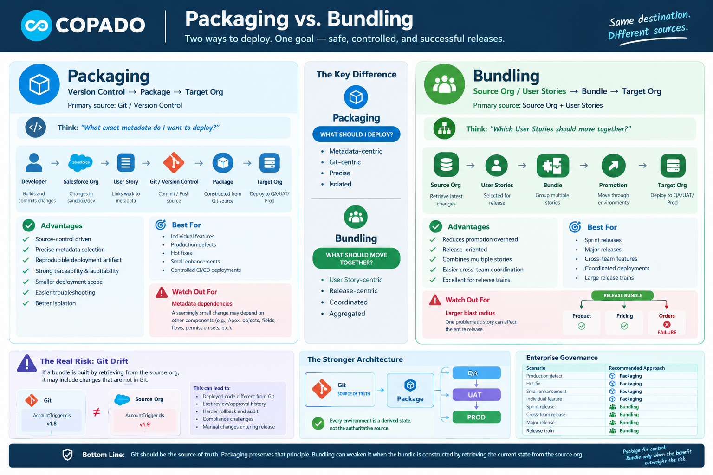

Copado DevOps — Deep Dive
Source-Control Integrity vs. Release Convenience — why your deployment model choice has deep governance consequences in a GitOps Salesforce org.

Everything flows from a single, version-controlled source. Each environment is a derived state, not an independent authority.
Every downstream environment is a deterministic derivative of the same Git commit.
A Bundle retrieves metadata from a source org and packages it for deployment. Convenient — but this introduces a second mutable source alongside Git.
Now you have two potentially different representations of the same application in the same pipeline.
If your organization treats Git as the source of truth, Bundling can introduce a fundamental governance problem — not because it is imprecise, but because it undermines source-of-truth integrity.
Bundling optimizes release convenience at the potential expense of source-control integrity.
Retrieving from an org introduces another mutable source into the deployment path — and mutable sources are dangerous in a GitOps-style model.
Suppose Git contains AccountTrigger.cls v1.8 but the source org holds v1.9.
A Bundle retrieval picks up the org's state, not the intended Git state. What you expected to deploy and what actually deploys become two different things.
That's a serious DevOps governance issue — the deployment no longer matches what Git says should be in production.
Drift is insidious because it can be silent. Automated pipelines pass green. No one raises a flag. The version mismatch only surfaces during incidents or compliance audits.
For an enterprise Salesforce implementation, Packaging should be the default.
Every environment should be treated as a derived state, not as the authoritative source. Only use Bundling when the release-management benefit clearly outweighs the source-of-truth risk.
One source, one artifact, one deployment path. Every environment is a reproducible derivation of the same commit.
Every deployment is traceable to a specific commit. Rollback is deterministic. Reviews are meaningful because what was reviewed is what gets deployed.
Never deploy something that hasn't passed through source control.
Every org change must be retrieved, reviewed, committed to Git, packaged, and then deployed — not short-circuited from org to Bundle to target.
All changes flow through Git before they reach a target environment — no exceptions.
Bundling from an org directly to deploy skips review, history, and traceability. The pipeline succeeds but governance is weakened.
This path has no commit, no review, no reproducible artifact — and no reliable rollback.
| Dimension | Packaging | Bundling |
|---|---|---|
| Primary source | Git / Version Control | Source Org + User Stories |
| Deployment path | Git → Package → Target | Source Org → Bundle → Target |
| Source-of-truth integrity | Strong — single source | Risk — two sources can diverge |
| Git drift exposure | None — deployments are Git-derived | Present — org state can differ from Git |
| Reproducibility | Full — rebuild from any commit | Partial — depends on live org state |
| Auditability | Complete commit-level traceability | May miss org-only changes |
| Rollback | Deterministic — revert to Git tag | Harder — org may have moved on |
| Code review effectiveness | High — reviewed artifact = deployed artifact | Lower — org may contain unreviewed changes |
| Best for | Enterprise, compliance-heavy, large teams | Coordinated releases, smaller teams with tight org hygiene |
| Watch out for | Initial Git hygiene investment | Silent drift, "what's actually deploying?" ambiguity |
| Enterprise recommendation | Default choice | Use only when release benefit outweighs governance risk |
Git should be the source of truth.
Packaging preserves that principle — every deployment is traceable, reproducible, and auditable from a single authoritative source.
Bundling can weaken it when the bundle is constructed by retrieving the current state from the source org, because the org may have diverged from what Git says should be in production.
For a mature Salesforce DevOps organization: make Packaging the default, enforce the discipline that all org changes flow through Git before deployment, and only reach for Bundling when the release-management benefit is clearly understood and the drift risk is actively managed.
No environment should be considered authoritative. Git is the single source from which all environments are built.
Retrieve → Review → Commit → Package → Deploy. No change reaches a target org without passing through source control.
Use Copado's metadata comparison tools to detect configuration drift between your source org and the corresponding Git state.
Where possible, restrict direct metadata modifications in source orgs so all changes must originate from a User Story and commit.
If Bundling is chosen for release convenience, establish a strict process to reconcile org state back to Git before and after every bundle deployment.
A rollback strategy that depends on restoring a prior org state (rather than re-deploying a prior Git artifact) is fragile and may not be repeatable.